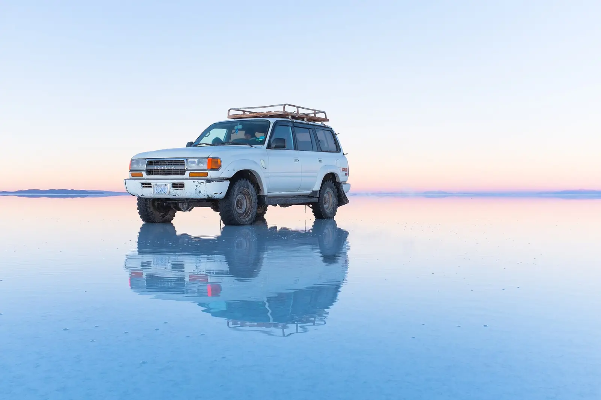
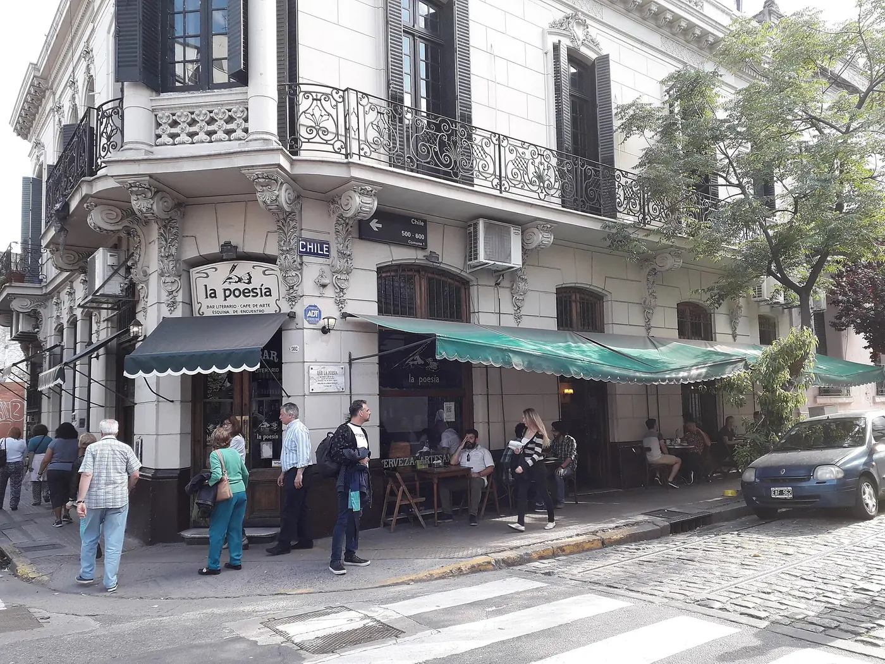

האפליקציה לטיול הגדול.
יומן על המפה, הוצאות בשקלים, חשבון סגור עם החבר'ה ותוכנית לכל יעד.
בטא חינמית ב-TestFlight. אנדרואיד בקרוב.

חמש אפליקציות לטיול אחד?
יאללה, מספיקה אחת.
מפות, גיליון הוצאות, יומן ותמונות, קבוצת וואטסאפ ואזהרות מסע — Yalla מחליפה את כולן.
יום 0. מה צריך לפני הטיסה?
בוחרים מדינה ורואים מיד: ויזה, אזהרת מסע, מטבע ותקע חשמל. בלי לחפש בעשרה אתרים.

יום 1 בלימה. לאן עכשיו?
כותבים לאן ולכמה זמן, ומקבלים תוכנית יום אחרי יום עם לינה, תחבורה וטיפים. וגם איך מגיעים: קווים, תחנות ומחירים.


יום 19. מי שילם על הג'יפ?
ארבעה חברים, שלושה ימים במדבר המלח. Yalla סוגרת את החשבון בכמה שפחות העברות. נסו בעצמכם:
כמה כל אחד שילם (₪)
ככה סוגרים
סה״כ 1,800 ₪, לכל אחד 450 ₪
- מיואב לעומר 450 ₪
- מנועה לעומר 210 ₪
- מדנה לעומר 90 ₪
באפליקציה זה קורה לבד, מכל ההוצאות של הקבוצה ובכל מטבע.
יום 33. קפה ב-9,000 פסו.
רושמים בכל מטבע ורואים מיד בשקלים: ליום, למדינה ולכל הטיול. אפשר גם פשוט לצלם את הקבלה.
Café · San Telmo
קפה ומדיה לונה9,000 ARS
בשקלים25.65 ₪


יום 54. הטיול כבר כתוב.
כל יעד, צעד ותמונה נשמרים על המפה. בסוף היום יוצא סטורי מעוצב, ובסוף הטיול מפה של כל הדרך.


15 שניות על Yalla.
בנינו את Yalla בדרך.
אנחנו עומר וריף. כל מה שהיה חסר לנו בטיול נכנס לאפליקציה, וכל הודעה שלכם נכנסת לגרסה הבאה.
מה שואלים אותנו.
כמה זה עולה?
בתקופת הבטא Yalla חינמית. לתכנון עם AI יש מכסה חודשית, כדי שכולם יוכלו להשתמש בו.
איך מורידים את הבטא?
מתקינים את TestFlight, האפליקציה של Apple לגרסאות בטא, ונכנסים לקישור ההורדה. משם Yalla מתעדכנת לבד.
יש גרסה לאנדרואיד?
עוד לא. אנחנו עובדים עליה עכשיו, ונעדכן כאן כשהיא תצא.
מי רואה את היומן שלי?
רק מי שאתם בוחרים. בעמוד של כל חבר מחליטים מה הוא רואה: יומן, רשימת חברים ויום הולדת.
ומה עם הפרטיות?
כל הפרטים במדיניות הפרטיות. בקצרה: לא מוכרים מידע ולא עוקבים אחריכם ברקע.
יאללה, טסים?
- מ־
- הבית
- אל
- הטיול הגדול
- שער
- TestFlight
גרסת בטא חינמית. ההורדה דרך TestFlight, האפליקציה של Apple לגרסאות בטא.